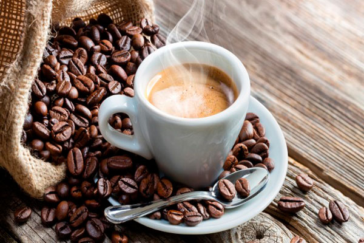
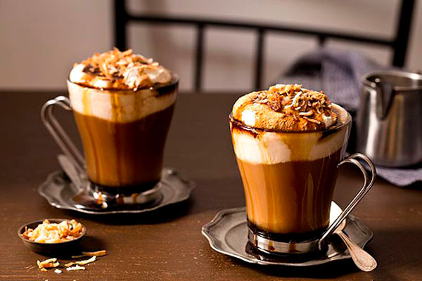
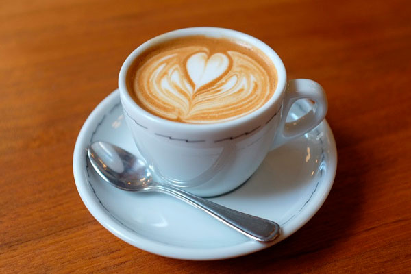

Мягкая, нетерпкая смесь различных сортов кофе из Мексики, Боливии и Гватемалы.
Эспрессо, кипяченое молоко и шоколадный сироп.
Смесь эспрессо и кипяченого молокас добавлением пены.
Наша гарантия: мы обязуемся оставлять у вас, наших гостей, только самые лучшие впечатления после каждого посещения гостевой. Не важно, зашли вы к нам просто проверить свою электронную почту за чашечкой чая или заказали грандиозный обед, вы увидите, что наш обслуживающий персонал обращает внимание на каждую мелочь. Если вы чем-то недовольны, отведайте наш чудо-напиток из голубики.
Ароматный напиток из черного чая,специй, молока и меда.